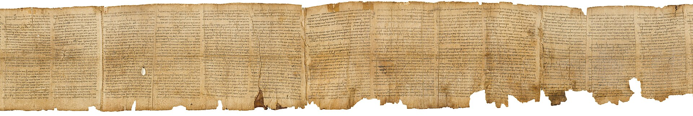
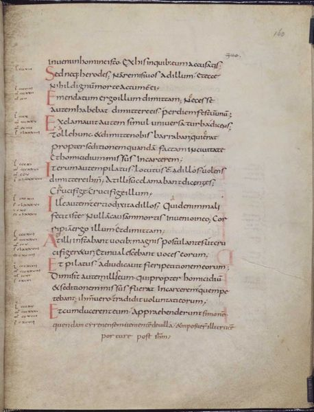
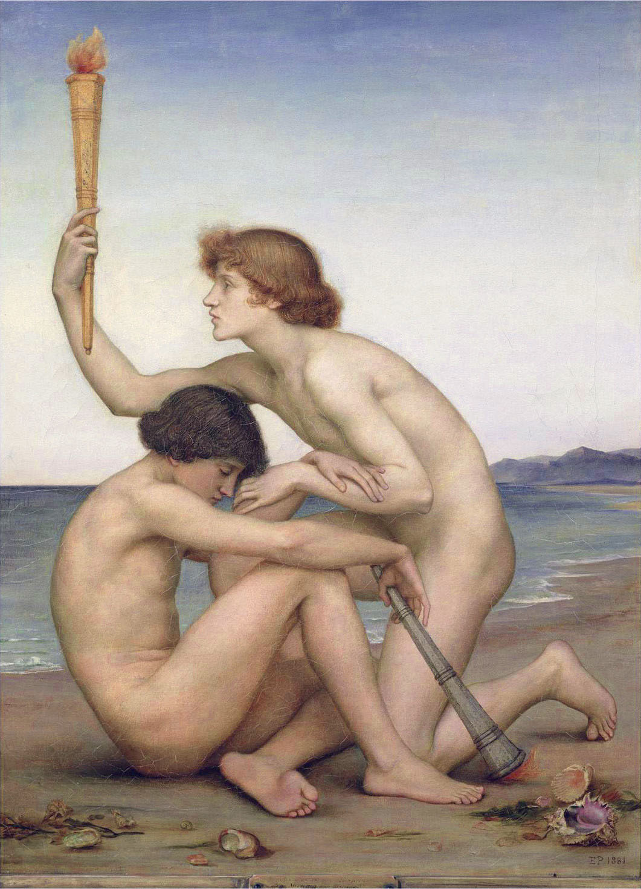

La cadena de traducción es limpia: Venus en hebreo, Venus en griego, Venus en latín. El error no está en ninguna traducción. Está en una lectura, y tiene fecha.
De todas las cosas que se dicen sobre el diablo, hay una que se puede desmontar sin salir del propio texto que la sostiene. No hace falta arqueología, ni manuscritos, ni discutir fechas. Basta leer ocho versículos más arriba.
Isaías 14:12 dice: «¿Cómo caíste del cielo, hêlēl hijo de la aurora?». Es el versículo del que sale, por una cadena que se puede reconstruir paso a paso, el nombre «Lucifer». Y en el versículo 4 del mismo capítulo el texto ha dicho ya, con toda claridad, de quién está hablando: es un mashal, una sátira burlesca, contra el rey de Babilonia.
No es una deducción de los especialistas. Es el encabezamiento que el propio oráculo se pone.
Y si el versículo 4 no bastara, el final del poema lo remata. En 14:16-20 el personaje del que se burla el oráculo aparece como un cadáver humano insepulto, arrojado fuera de su tumba «como rama abominable», pisoteado, sin descendencia. No es la imagen de un ser celeste derrotado: es el tratamiento que se le da a un tirano muerto cuyo cuerpo ha quedado tirado en el campo.
El género tampoco engaña. Es una sátira de mofa contra un rey que se creía intocable, del tipo que abunda en la literatura profética: el poderoso que se exalta hasta el cielo y termina en el polvo. Que el poema use imaginería astral no lo convierte en un relato cósmico. Nosotros decimos «se creía una estrella» sin pensar en astronomía.

Hêlēl es un hapax legomenon: no vuelve a aparecer en toda la Biblia hebrea. La derivación mayoritaria la lleva a la raíz hll, «brillar», de modo que significaría «el brillante», «el resplandeciente». Y šāḥar es el alba. «Brillante, hijo de la aurora» es, sin más misterio, el planeta Venus: el astro que sale antes del sol y desaparece cuando el sol llega. Para una sátira sobre un rey que brilló poco tiempo y se apagó, la metáfora es perfecta.
El trasfondo cultural es real y merece decirse bien. En Ugarit está atestiguada la divinidad šḥr, Šaḥar, «Alba», emparejada con Shalim, «Crepúsculo», ambos hijos de El. El «hijo de la aurora» de Isaías se apoya, por tanto, en un imaginario divino cananeo que existía. Hasta ahí, terreno firme.
Se lee a menudo que Isaías 14 reelabora un mito ugarítico en el que el dios astral Athtar se rebela contra el trono de Baal y es derribado. Conviene no repetirlo. En el Ciclo de Baal, Athtar es entronizado por decisión de Athirat y de El, y se baja del trono porque no da la talla: sus pies no alcanzan el escabel y su cabeza no llega al respaldo. No se rebela y no es derribado. La formulación defendible es que Isaías usa imaginería astral cananea que existía; el episodio mítico concreto que estaría detrás es una reconstrucción hipotética, y las genealogías ugaríticas no encajan limpiamente con las líneas del profeta.
Ahora la cadena. La Septuaginta traduce hêlēl por heōsphóros, «el que trae el alba», que era un epíteto griego corriente del planeta Venus. Y la Vulgata de Jerónimo lo pasa al latín como lucifer, «portador de luz».
Aquí está el dato que casi siempre falta: lucifer ya era, en latín clásico, el nombre normal del planeta Venus. Lo usan así Cicerón, Virgilio y Ovidio, siglos antes de que Jerónimo tradujera nada. Jerónimo no acuñó un nombre demoníaco: puso en latín, con la palabra disponible, el nombre latino del astro del que hablaba el griego, que a su vez traducía el nombre hebreo del mismo astro.
Las tres estaciones de la cadena son limpias. El referente no se mueve: es Venus en hebreo, Venus en griego y Venus en latín. El problema aparece después, y no es un problema de traducción.
Cinco estaciones, del hebreo a las lenguas modernas. Lo que hay que seguir no es la palabra —la palabra se mantiene notablemente estable— sino el referente: a qué cosa del mundo apunta. Pulsa cada estación y vigila la banda de abajo.
phosphóros, y la Vulgata pone lucifer. Aplicado al amanecer de la fe y, por extensión, a Cristo.
Jesús se llama a sí mismo «la estrella brillante de la mañana». La misma estrella. El mismo planeta.
Hay un argumento que zanja el asunto y que casi nunca se usa, quizá porque es demasiado sencillo. La misma palabra se aplica en el Nuevo Testamento a Cristo.
En 2 Pedro 1:19 aparece phosphóros —que la Vulgata vierte, otra vez, como lucifer— y en Apocalipsis 22:16 Jesús se llama a sí mismo «la estrella brillante de la mañana». Si lucifer fuera el nombre propio del diablo, el Nuevo Testamento se lo estaría dando a Jesús en dos pasajes distintos. No lo es: es el nombre de un astro, y ambos textos lo usan como lo que es.
El paso decisivo se puede fechar, y no ocurre en un escritorio de traductor sino en una polémica teológica.
Tertuliano, en Adversus Marcionem II,10, aplica el oráculo de Isaías a la caída de Satán —y hace lo mismo con Ezequiel 28—. Es el testimonio explícito más antiguo que se puede documentar. Después, Orígenes, en De Principiis I,5, lo sistematiza: cita Isaías 14:12 y concluye que por esas palabras queda mostrado con toda evidencia que cayó del cielo aquel que antes era Lucifer. Y no se queda ahí: construye con ello un esquema general —ser celeste bueno que cae por su propia elección— que es el molde de toda la tradición posterior. Jerónimo y Gregorio el Grande lo consolidan.
El puente que hizo posible la lectura está en otro sitio: en Lucas 10:18, «veía a Satanás caer del cielo como un rayo». Puesto junto al «caíste del cielo» de Isaías, permitió convertir una sátira política antibabilónica en mitología cósmica. Dos versículos de libros distintos, escritos con siglos de diferencia y sobre asuntos distintos, leídos como si hablaran de lo mismo.
Conviene añadir un matiz, porque el crédito no es enteramente cristiano: en el judaísmo del Segundo Templo el motivo del hybris astral —el ser celeste que se exalta y cae— ya circulaba, y aparece en la literatura enóquica. Lo que es específicamente cristiano, y patrístico, es la ecuación concreta hêlēl = Satán.

El otro pasaje que sostiene el retrato del diablo caído tiene un problema aún más serio, y es textual.
Ezequiel 28 contiene dos oráculos contra Tiro: uno contra el «príncipe» y otro, una qinah o lamento, contra el «rey». El referente histórico es el monarca tirio contemporáneo del profeta, en el contexto del asedio babilónico de la ciudad. Los motivos son espectaculares —estaba en el Edén, cubierto de piedras preciosas, en el monte santo de Dios, entre carbones de fuego, y fue expulsado por su soberbia y su comercio— y se entiende que hayan invitado a leerlos como el retrato de un ángel caído.
Pero toda esa lectura descansa en cuatro palabras del versículo 14, y esas cuatro palabras no están seguras. El texto masorético lee ʾat-kərûb mimšaḥ, «tú eras el querubín ungido». La Septuaginta lee metà toû cheroub: «con el querubín». Es decir, el rey no es el querubín, sino que estaba junto a él, custodiado por él. Y la interpretación satánica del pasaje sólo funciona con la primera lectura.
Traducciones modernas de referencia entienden el querubín como el guardián del rey y no como el rey mismo. Que la lectura satánica de Ezequiel 28 siga circulando se debe sobre todo a la literatura dispensacionalista del siglo XX, no a la exégesis crítica.

Es la tercera vez en esta serie que aparece el mismo mecanismo, y ya conviene nombrarlo. Un sustantivo común o un cargo se endurece hasta volverse el nombre propio de alguien. Le pasó a ha-satán, que era una función judicial —el acusador— antes de ser un personaje. Le pasó a bəliyyaʿal, que era la vileza antes de ser un príncipe. Y le pasó a hêlēl, que era un astro antes de ser un nombre.
Tres veces el mismo procedimiento, en tres lenguas distintas y en tres siglos distintos. No es una conspiración ni un fraude: es cómo funciona la lectura de los textos antiguos cuando la comunidad que los lee ya tiene en la cabeza una pregunta que el texto no se hacía. La pregunta era «¿de dónde viene el mal?», y el texto respondía a otra cosa.
En la entrega siguiente el objeto cambia. Ya no será un nombre, sino el animal más famoso de la Biblia; y el error, en lugar de estar en una mayúscula, estará en siete siglos de distancia.
Pieza interactiva de la serieEn el grafo, la línea que va de Isaías 14 a «Lucifer es el nombre del diablo» está tachada, y la que va de Ezequiel 28 a Tertuliano es discontinua por el problema textual del versículo 14. Esta entrega explica las dos.
Abrir el grafo →Es dato firme que Isaías 14:4 identifica al destinatario del oráculo como el rey de Babilonia y que 14:16-20 lo describe como un cadáver humano insepulto. Lo es que hêlēl es un hapax legomenon cuyo referente astral es Venus; que la Septuaginta traduce ἑωσφόρος y la Vulgata Lucifer, ambos nombres corrientes del planeta en sus respectivas lenguas; y que lucifer designa el planeta en Cicerón, Virgilio y Ovidio. Lo es que la misma palabra se aplica a Cristo en 2 Pedro 1:19 y Apocalipsis 22:16. Y lo es que la lectura satánica arranca en Tertuliano, Adversus Marcionem II,10, y la sistematiza Orígenes, De Principiis I,5, con Lucas 10:18 como puente exegético. En Ezequiel 28, la divergencia entre el masorético «tú eras el querubín» y la Septuaginta «con el querubín» está establecida.
Debate abierto: el trasfondo mítico concreto de Isaías 14:12-15. Que el texto use imaginería astral cananea es firme; que reelabore un episodio de rebelión de Athtar es una reconstrucción, y en el Ciclo de Baal ese episodio no existe con esa forma. Está también en discusión el peso del precedente judío del Segundo Templo: el motivo del hybris astral circulaba en la literatura enóquica, y cuánto de la lectura patrística se apoya en él es materia de matiz. Las referencias bibliográficas de Oldenburg y Craigie sobre Athtar y hêlēl se citan aquí de segunda mano y no se han comprobado en el original, por lo que no se les da peso argumental.
Nada de esto dice que la lectura cristiana de Isaías 14 sea ilegítima como lectura religiosa. Una tradición puede leer sus textos como quiera, y de hecho es lo que hacen todas. Lo que este artículo describe es otra cosa: cuándo, dónde y por qué apareció esa lectura, y qué decía el texto antes de que apareciera. Saber que lucifer era el nombre latino de Venus no le quita nada a nadie. Añade una historia.